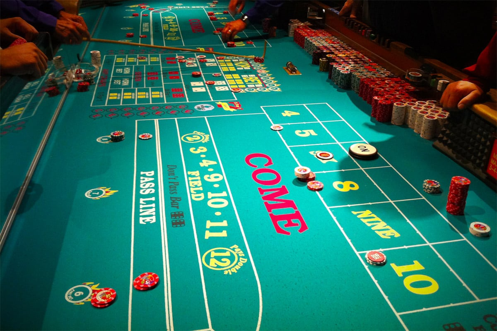

Se você é novo no craps, ele pode parecer um pouco complicado e muito agitado – há muita ação acontecendo ao mesmo tempo, já que as apostas podem ser feitas a qualquer momento durante o jogo. Embora seja possível jogar dados sabendo apenas algumas apostas, você pode se divertir muito mais quando conhece todas as possibilidades de apostas disponíveis.
Os jogadores apostam nos resultados dos lançamentos de dados. Dois dados de 6 faces são usados neste jogo. O jogador que lança os dados é chamado de “shooter”, cada jogador na mesa pode ter a oportunidade de lançar. Os dados são passados no sentido anti-horário após cada nova rodada.
Quando uma nova rodada se inicia, o shooter seleciona dois dados para lançar. Em seguinte, o shooter deve fazer uma aposta de linha de passe – “Pass” ou “Don’t Pass”. Outros jogadores da mesa também fazem suas apostas. Após isso, o shooter começa a rodada lançando os dados contra o lado oposto da mesa. O primeiro lançamento do shooter é também conhecido como lançamento de saída (em inglês “come-out roll”).

As apostas que podem ser feitas na mesa são:
Pass Line Bet — Ganha se o primeiro lançamento for Natural (7 ou 11) e perde se for Craps (2, 3 ou 12). Se no lançamento Come Out, sair um Point (4, 5, 6, 8, 9, 10), o Point deve ser repetido antes do 7 para poder vencer. Se sair um 7 antes do shooter fazer Point, a aposta Pass Line é perdida. Esta aposta paga 1:1.
Don't Pass Line Bet — É o contrário da Pass Line Bet. Ganha se o lançamento de saída é um Natural e perde se sair um 2 ou 3 (12 é um empate). Se um Point sair, o Shooter deve rolar um 7 antes que o Point seja repetido para poder vencer. Se sair o Point primeiro, a aposta é perdida. Esta aposta paga 1:1.
Come Bet — Esta aposta pode ser feita após o Point na Pass Line ser determinado. Depois de colocar uma Come Bet, o primeiro lançamento determina o Come Point. A sua Come Bet será vencedora se sair um Natural e perdedora se sair um Craps. Os outros lançamentos farão de si vencedor se o Come Point se repetir antes de sair um 7. Se sair um 7 perderá a sua Come Bet. Esta aposta paga 1:1.
Don't Come Bet — É o contrário da Come Bet. Depois do Come Point ser estabelecido você ganha se o shooter acertar um 2 ou um 3 e perde se sair um 7 ou um 11 (12 é um empate). Você ganha se um 7 sair. Esta aposta paga 1:1.
Odds Bet — Quando sai um Point pode fazer esta aposta adicional. A aposta é ganha se o Point sair antes do shooter fazer sair um 7. Cada Point pago de forma diferente. 4 ou 10 paga 2:1, 5 ou 9 paga 3:2 e 6 ou 8 paga 6:5.
Field Bet — Estas apostas só são válidas para um lançamento. Ganha se o shooter acertar um 2, 3, 4, 9, 10, 11 ou 12 e perde se acertar um 5, 6, 7, ou 8. A Field Bet paga 1:1, com exceção do 2 e do 12 que paga 2:1.
Place Bets — Esta aposta pode ser feita depois do Point ser determinado. Pode apostar enquanto o ponto é determinado, ganha se o shooter fizer o Point antes de acertar um 7. Se sair um 7 você perde a aposta. O pagamento desta aposta depende do número que você apostar para Point. 4 ou 10 paga 9:5, 5 ou 9 paga 7:5 e 6 ou 8 paga 7:6.
Big Six & Big Eight Bets — Pode ser feita em qualquer lançamento. Ganha se um 6 ou um 8 aparecer antes de um 7. Ambas as apostas pagam 1:1.
Hardway Bets — Ganha se um número Hard sair (2+2 para 4, 3+3 para 6, 4+4 para 8 e 5+5 para 10) antes de sair um 7 ou antes de uma combinação Easy Way (dados diferentes) do Hard Way total ser acertada. As combinações 2-2 e 5-5 pagam 7:1. Já as combinações 3-3 e 4-4 pagam 9:1.
Any Craps — Ganha se um 2, 3 ou 12 sair, paga 7:1.
Any Seven — Ganha se sair um 7 e paga 4:1.
Eleven — Ganha se sair um 11, paga 15:1.
Ace Deuce — Ganha se sair um 3, paga 15:1.
Aces — Ganha se sair um 2, paga 30:1.
Boxcars — Ganha se sair um 12, paga 30:1.
Hornbet — É uma aposta no 2, 3, 11 e 12 ao mesmo tempo e ganha se um desses números sair, paga 8:1 para 2, 3 e 12, paga 16:1 para o 11. Se ganhar uma Horn Bet as outras três são perdidas.
C & E Bet — A aposta C é colocada diretamente na letra C que representa a aposta mos números Craps. A aposta E é colocada diretamente na letra E que significa uma aposta no número 11.